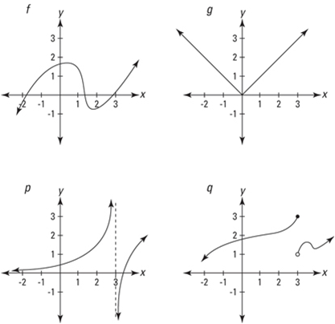
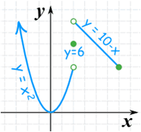
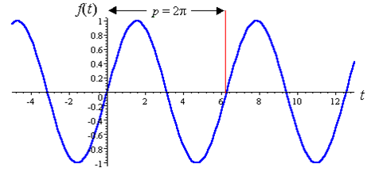
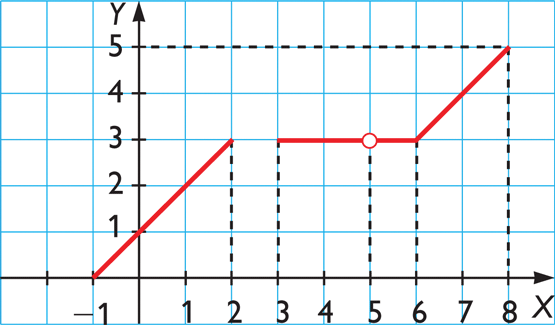

Funciones.Interpolación
3. continuidad
Una función continua es aquella en la que, intuitivamente, “pequeños" cambios en la entrada producen “pequeños" en la salida. De otro modo, se dice que es discontinua.
Ejemplos:

- f, g son continuas R
- p es continua en su dominio dom p= R-{3}
- q es continua en R- {3}
Ejercicio. Estudia la continuidad de las siguientes funciones:
a) 
b) 
c) 
Soluciones: a) (-∞,2)U(2,6); b) R; c) (-1,2)U(3,5)U(5,8)
Obra publicada con Licencia Creative Commons Reconocimiento No comercial Compartir igual 3.0